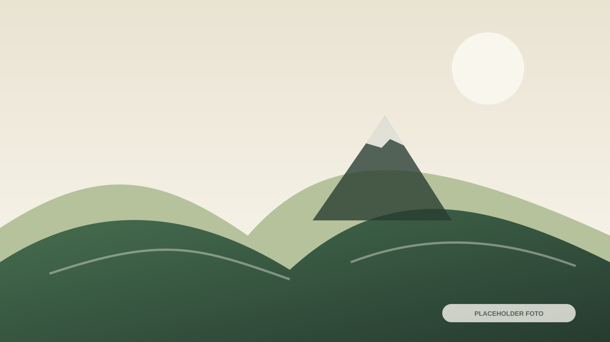

Kuliner
Exotic
Deskripsi, harga, lokasi, dan informasi pemesanan belum tersedia.
FOTO PRODUK BELUM ADATemukan kuliner khas, makanan lokal, produk olahan pertanian, oleh-oleh, dan karya UMKM masyarakat Patakbanteng.
Brief menyebut Exotic, mi ongklok, makanan khas lokal, minuman lokal, produk olahan pertanian, oleh-oleh, dan produk UMKM.
Deskripsi, harga, lokasi, dan informasi pemesanan belum tersedia.
FOTO PRODUK BELUM ADAInformasi penjual, harga, lokasi, dan pemesanan perlu dilengkapi.
FOTO PRODUK BELUM ADA
Nama produk, bahan, harga, penjual, dan lokasi.
NAMA BELUM DIISIProduk lokal hasil pengolahan komoditas pertanian.
NAMA BELUM DIISI
Produk yang dapat dibawa pulang oleh wisatawan.
NAMA BELUM DIISI
Kerajinan atau produk masyarakat Patakbanteng.
NAMA BELUM DIISIHidangan lokal dan makanan siap santap.
Minuman khas atau produk olahan masyarakat.
Produk yang sesuai untuk dibawa pulang.
Hasil pertanian dan produk olahannya.
Setiap produk akan menampilkan lokasi pembelian, informasi penjual, harga apabila tersedia, dan tombol pemesanan.
Nama penjual, nomor WhatsApp, lokasi, dan harga harus dikumpulkan dari pelaku UMKM.
Titik lokasi penjual dan pusat oleh-oleh akan ditempatkan di sini.
Pengelola dapat menggunakan halaman informasi untuk mengumpulkan data produk secara terstruktur.
Informasi produk, lokasi pembelian, dan ketersediaan dapat diperbarui setelah data pelaku UMKM diterima.